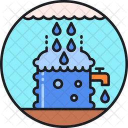

Collection
Collection: This is when water that falls from the clouds as rain, snow, hail or sleet, collects in the oceans, rivers, lakes, streams. Most will infiltrate (soak into) the ground and will collect as underground water. The water cycle is powered by the sun's energy and by gravity.